Fatma Nilgun Abali
Mechanical engineering graduate, UBC. Mechanism design, prototyping, testing and system validation.
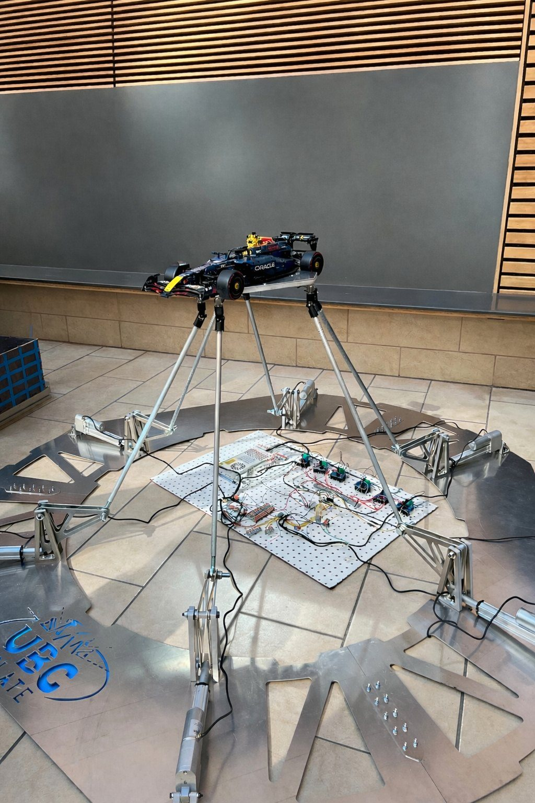
6-DoF Motion Platform — Overview and results
Servotest builds lab rigs that reproduce road, track and earthquake motion. Our brief: a lightweight 6-DoF platform for race-car suspension testing, sized at full scale for a 500 kg payload at up to 200 Hz. In a conventional Stewart platform the actuators are the legs, so their mass moves with the load and limits speed. We grounded all six and drove the platform through bell cranks and pushrods.
- Sourced materials and fabricated the prototype: waterjet, 3D printing, machining
- Sized and selected the actuators
- Built and wired the control board with a teammate
- Integrated an IMU for validation testing
- Produced the engineering drawings, schematics and project poster
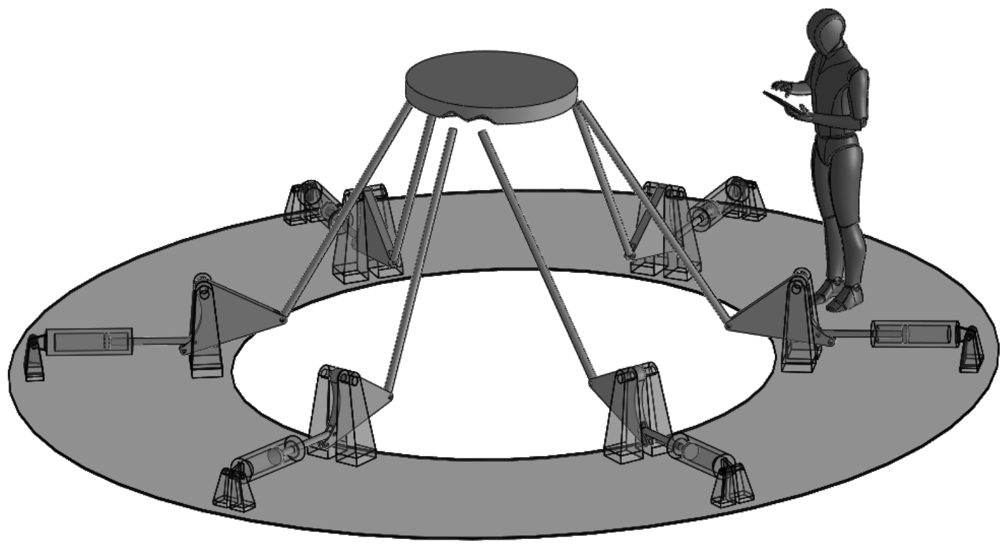
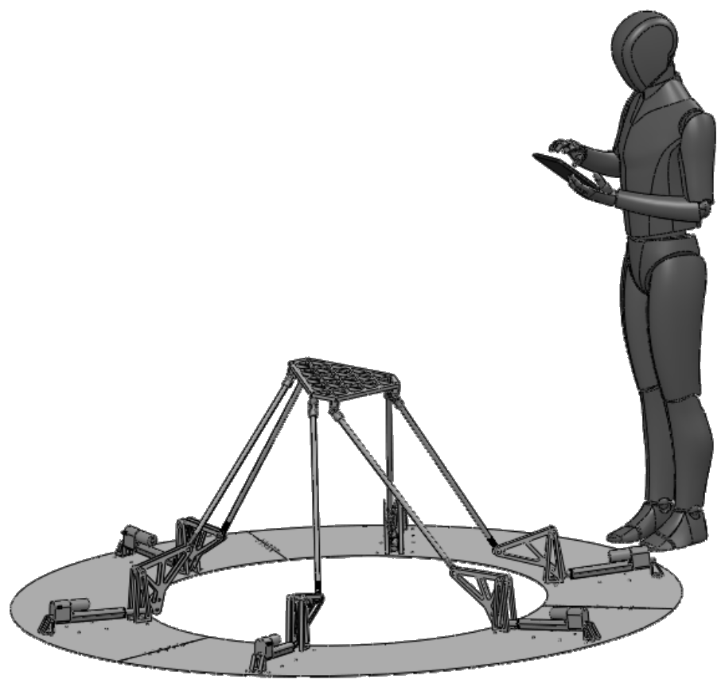
Mechanism design and drawings
Every part detailed in SolidWorks for waterjet cutting and machining, from the full assembly down to each sub-assembly.
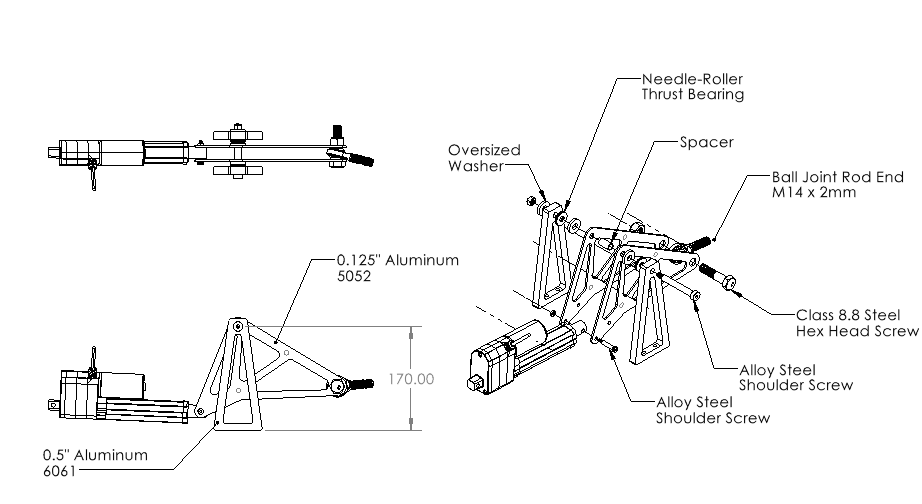
Sizing the actuators
- Duty cycle
- Highest available
- Resolution
- Highest available
- Stroke
- Matched to the platform’s range of motion
- Limits
- Cost and supplier lead time
- Choice
- After team-wide research, we chose the 12 V actuator I found, from a Vancouver supplier
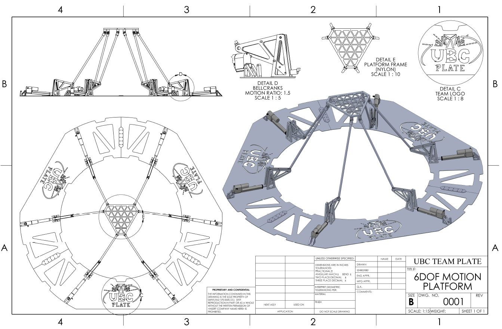
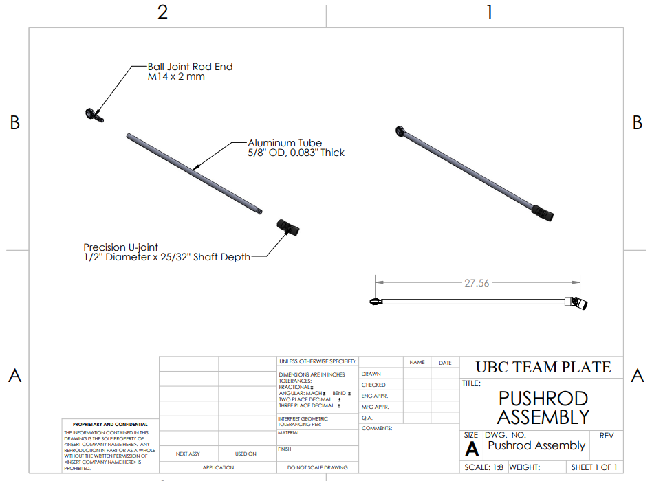
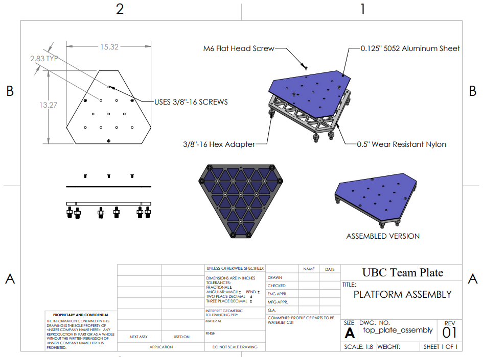
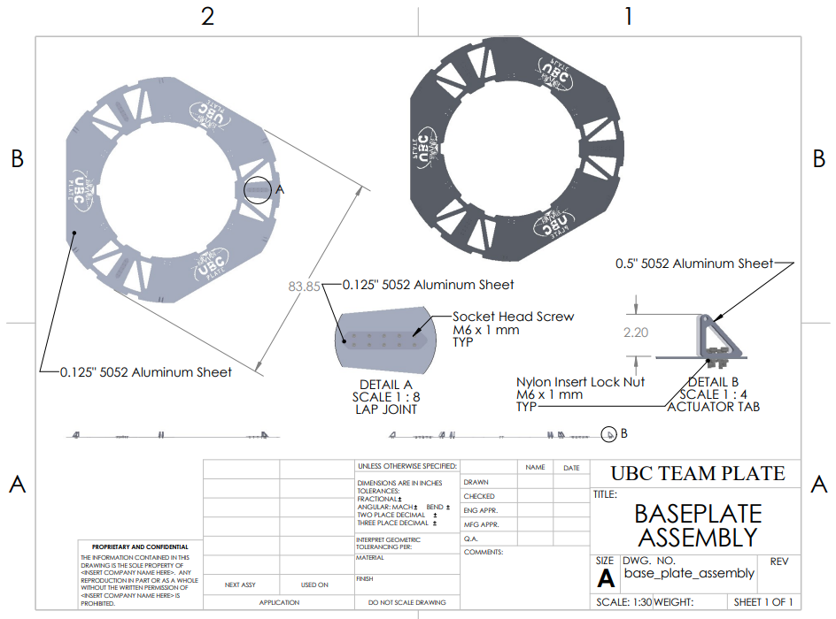
Fabrication and wiring
Waterjet-cut aluminium base and bell cranks; fittings milled, turned, tapped and die-threaded.
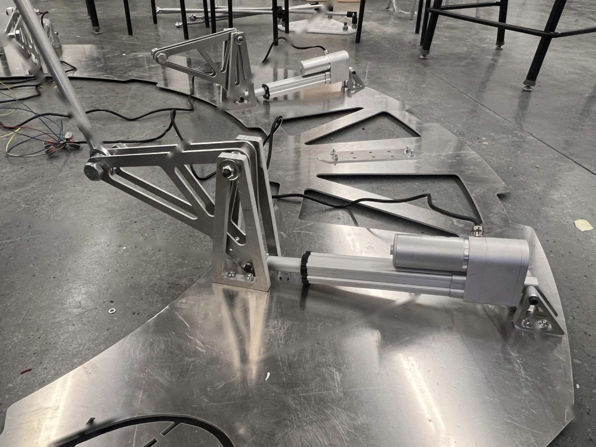
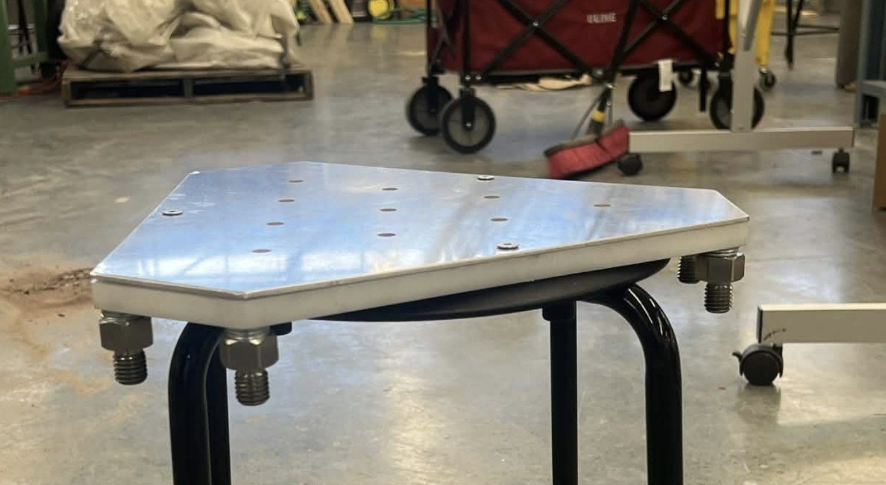
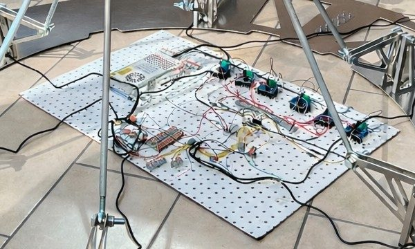
Dometic Marine — Shop equipment design and load checks
Dometic's marine division designs and builds SeaStar steering systems for boats. Over two co-op terms in the machining department I designed shop equipment, released drawings and checked loads.
Ergonomic finished-goods cart: $10K redesign proposal
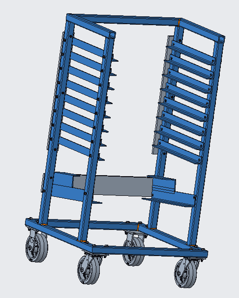
- Problem
- Operators found it hard to push; the safety officer made it my project
- Standard
- WorkSafeBC limits on pushing loads and time; met with upgraded casters and fewer tray slots
- Design
- Reverse-engineered the old cart; 198-part welded Creo assembly; 4-sheet GD&T drawing set
- Quotes
- From machine shops across Metro Vancouver
- Proposal
- $10K, buying the carts over 2–3 years
- Outcome
- Presented to the machining manager, who took it to the safety committee; handed off to my supervisor for procurement
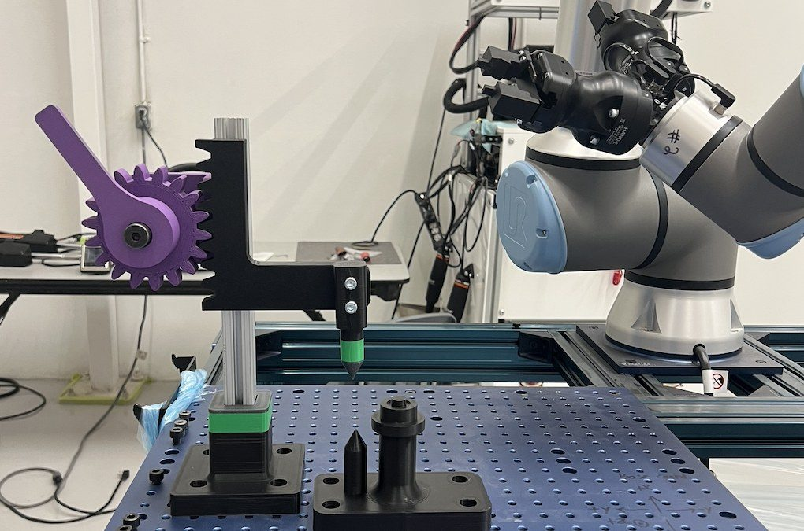
Robotic inspection feasibility
Designed and 3D-printed a motion-replication fixture and programmed a UR arm to test whether CMM inspection could be automated. It was feasible at this stage; the next step is prototyping how the UR integrates into the inspection cell.
Lifting-cradle stress checks
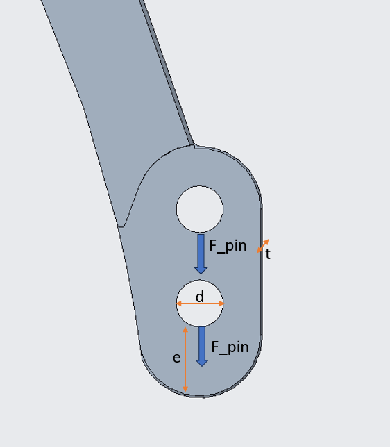
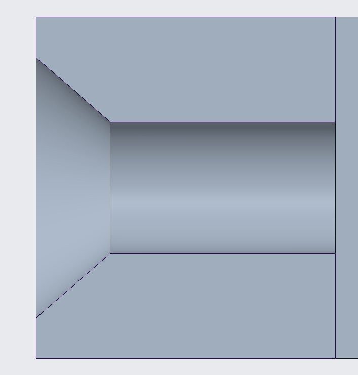
| Check | Stress, psi | SF |
|---|---|---|
| Clevis pin tear-outτ = F / 2t(e − d), von Mises | 1,397 | 28.6 |
| Clevis bearingσ = F / dt, vs 27 ksi allowable | 538 | 50.2 |
| Frame, shear + bending | 4,928 | 8.1 |
| Screw section, tension + eccentric bending | 8,202 | 4.9 |
Contributed to the stress checks for a cradle lifting a 400 lb flywheel, in Excel. Al 6061-T6, 40 ksi yield; F = 100 lbf per clevis pin.
Production floor improvements
Working alongside operators to make 50 CNC machines easier to monitor, move and maintain.
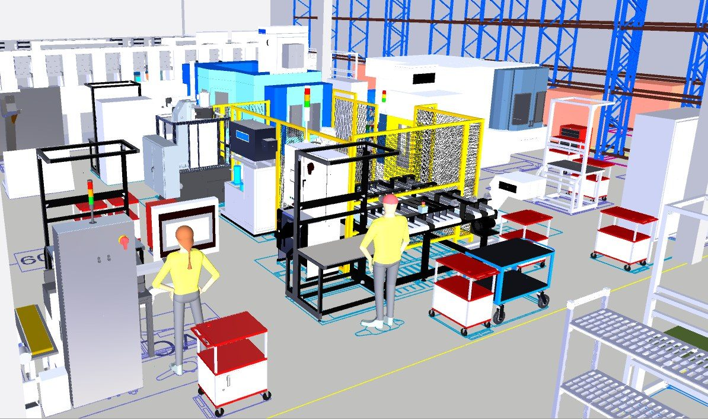
Factory re-layout
- Planned CNC machine moves between buildings from field measurements of machines and surrounding equipment
- Chose new machine locations based on space, access and workflow
- Kept the plant's 2D AutoCAD layouts and 3D Navisworks model up to date after each move
Ignition SCADA for 50 CNC machines
- Programmed front- and back-end alarm logic on OPC server data: availability, performance (under 85% of expected rate), quality (over 5% and 10% fail rate) and checklist alarms
- Stored machine parameters and alarm records in SQL, and set up database backups
- Built an engineer-facing admin page for editing control limits and in-cell inspections
- Refined alarm thresholds and screens with operator feedback
- Refactored a 2,000-line script for cleaner SCADA integration
Procedures and maintenance
- Wrote 5+ SOPs for CNC machine operation and CNC part production, standardizing procedures for operators
- Developed a custom filter-access solution and specialty wrench that improved ergonomics and cut weekly maintenance time
UBC Agrobots — Targeted weed-spraying system
UBC Agrobots (ubcagrobot.com) builds autonomous robots for precision agriculture. Its spraying system targets only the weeds its AI detects, which the team estimates cuts herbicide use by up to 80%. I joined in September 2023 and led the 10-student spraying team from January 2024 to April 2025, taking it from concept through to prototyping; the system was built after my term ended.
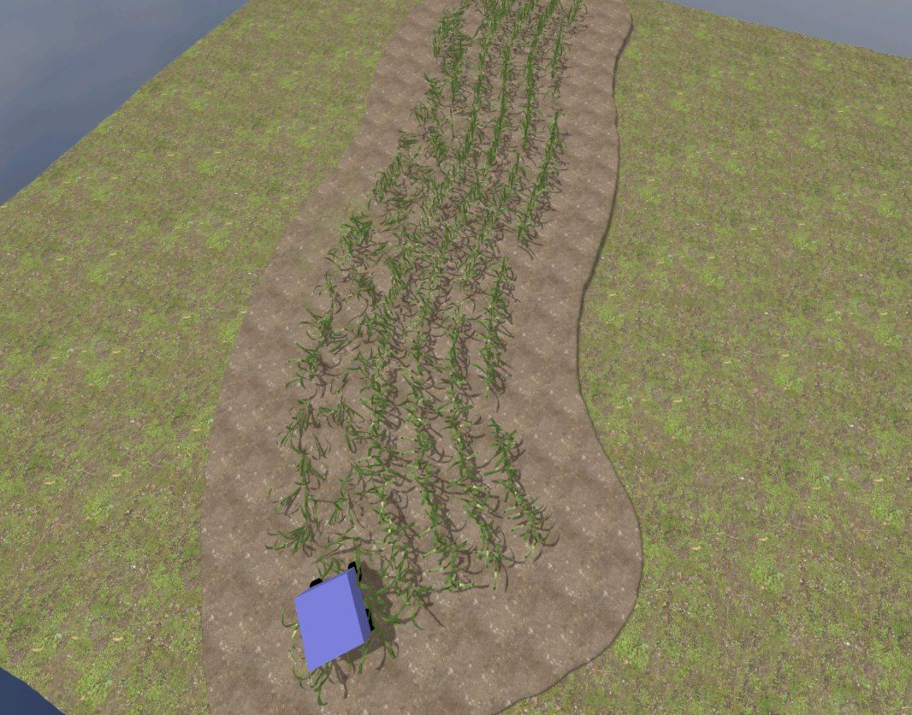
- Led a 10-student team from concept generation through risk analysis to prototyping
- Ran a DFMEA, rating failure modes by severity, occurrence and detectability to prioritize fixes
- Designed the spray circuit: power budget, safety components and EasyEDA schematic
- Wrote and ran a 10-step test plan on the pump and circuit; the flow rate, spray range and valve recoil results sized the circuit equipment
- Designed a 3D-printable camera support with 6-DoF adjustability in SolidWorks, so the ZED cameras could be aimed for weed detection
- Coordinated interfaces with the Chassis, Applied AI and Navigation teams
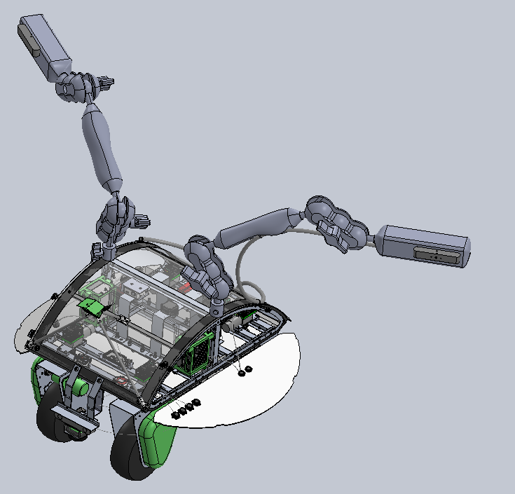
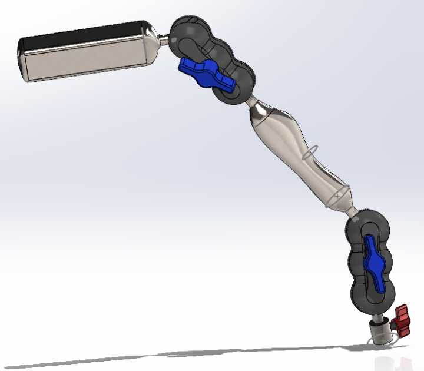
Aerospace Analysis — FEM studies and earlier projects
Solvers and Abaqus files for both FEM projects: github.com/NilgunAbali
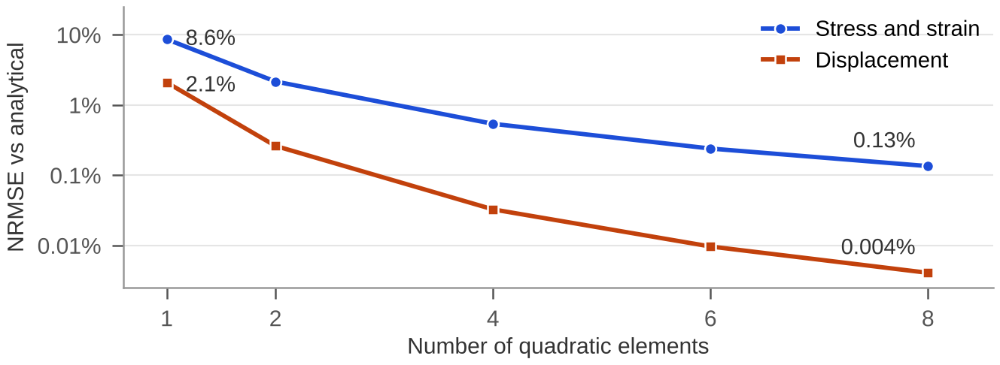
Ingenuity Mars helicopter: FEM and convergence
- Derived analytical and FEM models of the blade under linearly varying centrifugal load, using quadratic bar elements
- Wrote a Python FEM solver with a variable element count, and reran it in a convergence study to find the optimum mesh
- Simulated the main beam under worst-case loading in Abaqus
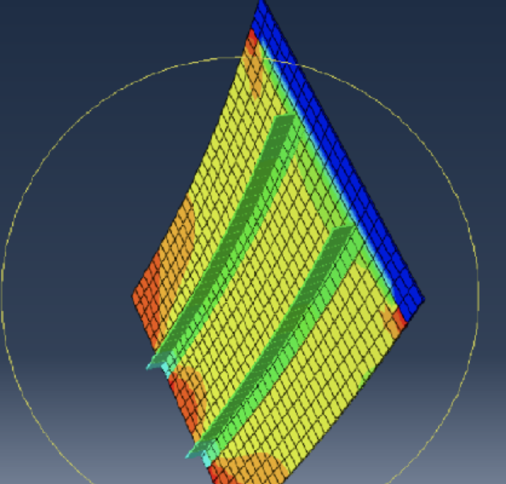
Airplane wing under lift: stiffener study
- Modelled a wing under lift in Abaqus, using the wing's symmetry to simplify the model
- Compared structural modifications to find the layout with the least displacement
- Compared two ways of attaching the L-shaped stiffeners to the skin: tie constraints and merged geometry
Battery-removal jig for a solar race car
Designed a SolidWorks jig for removing the battery from the race car, applying DFM/DFA to cut assembly time and improve safety. Also instrumented, spot-welded and soldered sensors, LEDs and circuitry onto PCBs.
Pilot-scale pulp screening research
Analyzed LabVIEW sensor data in MATLAB and Excel, computing 100+ stress and strain parameters to find optimal screening conditions. Traced a critical screen failure to its root cause, saving two weeks, and trained 6 researchers.